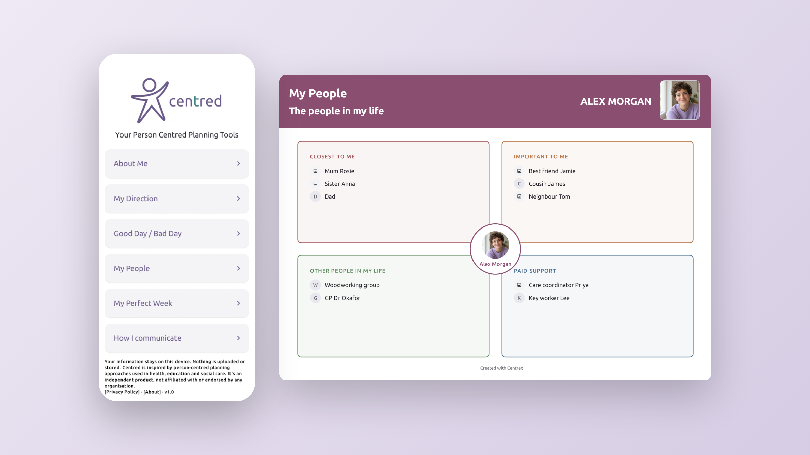
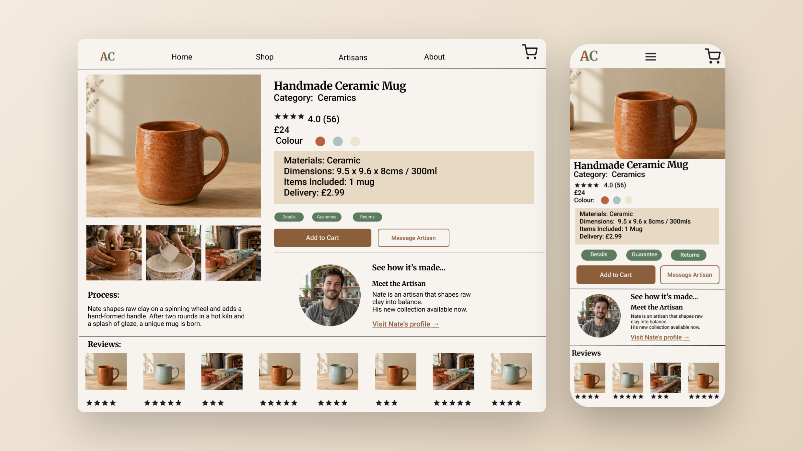
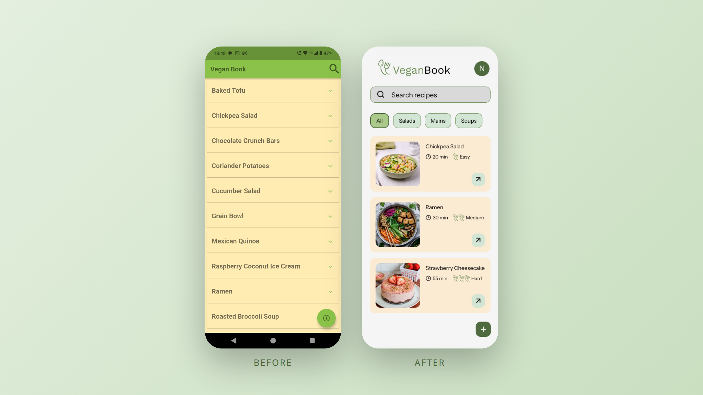
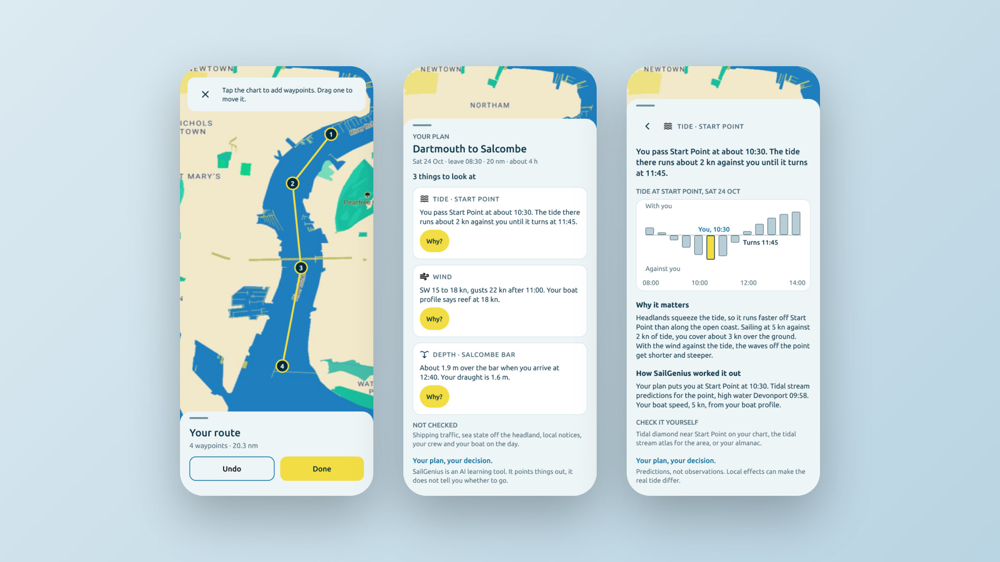

I care about accessibility and person-centred design, creating experiences that work for people of all abilities. I'm looking for a role where I can keep learning as part of a team.

A person-centred planning app that turns a plan into a clear one-page PDF. I designed it in Figma and built it in Flutter.

An online shop for handmade goods that tells the story behind every piece, taken from research and testing to a developer-ready design.

A visual revamp of a vegan recipe app, turning a plain list of recipes into something people want to browse, cook from and share.

A sailing app that helps new skippers understand their own passage plans. A software engineer was building it and asked me to design the experience.